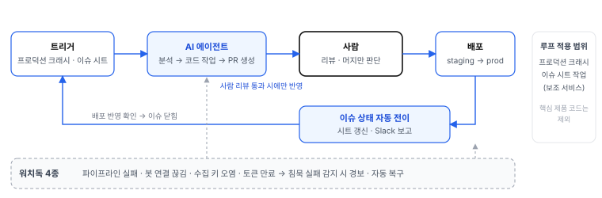
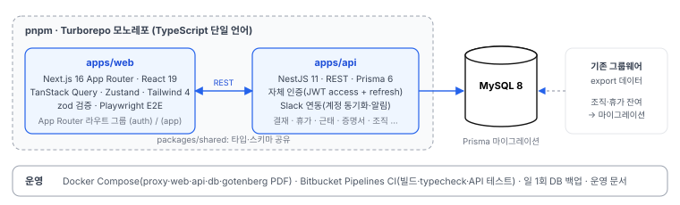
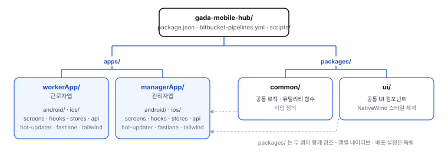
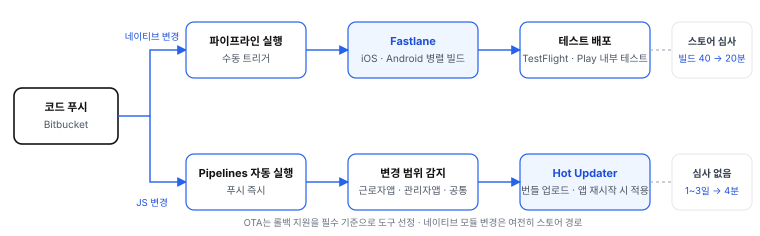

문제를 정의하고 설계 · 구현 · 배포까지 단독으로 끝까지 담당하는 7년차 엔지니어입니다. 건설 일용직 HR 플랫폼 '가다'에서 백오피스(Vue) 초기 설계와 앱의 React Native 전환을 주도했고, 사내 그룹웨어를 대체하는 ERP를 Next.js · NestJS로 0→1 구축했으며, AI 에이전트를 오케스트레이션하는 개발 자동화 11종을 단독 운영합니다. 2026.08부터 기획 · 프론트 · 백엔드로 이루어진 3인 파트의 파트장입니다.
레포 4곳 중복 구현을 사내 첫 공통 패키지로. beta → 정식 배포 2단계로 소비처 장애 0, 커스텀 계약서 18종
가다오피스 · 알림 · 핀페이 · WTrust
2023.10~현재
노무 문서 PDF/엑셀 공통화, Push · SMS 통합 컴포넌트, 임금 선지급 어드민(React), 무로그인 외부 동의 페이지
Hello Factory · HAII · O2Palm
2019~2023 · FE 100%
실시간 학생 피드백(GraphQL Subscription), 통합 어드민, Flutter/BLE 세팅앱, Ionic · Angular 앱(O2Palm은 리뉴얼 참여)
01
사내 개발 파이프라인 자동화 (AI 에이전트 오케스트레이션)
2024.06 ~ 현재 · 단독 설계 · 구축 · 운영 · Python, Claude Code, Slack Socket Mode, launchd, Bitbucket API
문제
프론트 2명 팀에 반복 작업이 사람 손에 묶여 있었다. 프로덕션 크래시를 보고 이슈로 옮기고, 이슈를 고쳐 PR을 내고, 배포되면 이슈 시트(구글 시트) 상태를 바꾸고, 계약서 같은 정형 문서를 요청받아 수기로 만들었다. 앱 이슈마다 원인을 찾고 해결 방안을 시도해 정리하는 데 1~2시간, 정형 문서는 건당 평균 2시간이 들었고, 담당자가 바쁘면 전부 멈췄다.
판단
범위를 의도적으로 한정. 핵심 제품 코드가 아니라 크래시 대응 · 보조 서비스 유지보수 · 문서 생성처럼 반복적이고 범위가 명확한 일에만 에이전트를 투입. 리뷰 비용이 산출물 가치를 넘지 않는 영역부터.
사람은 판단만. 산출물은 리뷰 · 렌더 검증 게이트를 통과해야 반영. 개입 지점을 리뷰 · 머지로만 줄임.
가장 큰 위험은 침묵 실패. 자동화가 조용히 멈추는 걸 감시하는 워치독을 별도 계층으로 둠.
구조

이슈 → 에이전트 PR → 사람 리뷰 → 배포 → 상태 전이 루프. 워치독 4종이 루프 자체를 감시한다.
결과
1~2시간 → 5분
앱 이슈 원인 분석 · 해결안 도출 (경미한 이슈 기준, 에이전트 결과 확인 · 리뷰만)
2시간 → 5분
정형 문서 생성. 요청자 셀프서비스로 전환, 개발자 관여 최소화
11종 + 4
상시 구동 자동화 + 워치독(파이프라인 · 봇 연결 · 수집 키 · 토큰)
이슈 → PR → 배포 루프 자동화: 크래시 자동 이슈화 → 에이전트 코드 작업 · PR → 사람 리뷰 · 머지 → 배포 반영 시 이슈 상태 자동 전이
엑셀 한 장 → 커스텀 문서 컴포넌트 → PDF/xlsx 자동 생성. 병렬 요청은 격리 워크스페이스로 충돌 방지
반복 작업의 담당자 의존 제거: 그 사람이 없어도 루프가 돈다
배운 것 · 다음
워치독은 처음부터 있던 게 아니다. 수집 키가 오염돼 에러 로그가 401로 조용히 끊긴 일, 봇 소켓만 끊겨 아무 알림 없이 offline이 된 일을 겪고 나서 "실패를 알리는 자동화"를 따로 세웠다. 다음은 절감 시간을 추정이 아니라 계측으로 바꾸는 것. 봇 작업 대시보드에 작업별 소요를 쌓는 중이다.
02
사내 ERP (HR · 근태 · 휴가 · 전자결재) · 0→1 자기주도 프로젝트
2026.08 ~ 현재 · 기획 · 설계 · 구현 · 배포 단독 (근무 외 시간) · Next.js 16 App Router, React, TanStack Query, Zustand, Tailwind 4 · NestJS 11, Prisma 6, MySQL 8 · pnpm · Turborepo, Docker, Playwright
문제
회사가 그룹웨어 구독에 연 1,200만 원을 쓰고 있었고 고정비 절감이 필요했다. 기존 그룹웨어 기능을 분석해 보니 실제로 쓰는 건 HR · 근태 · 휴가 · 전자결재 네 가지였다. 누가 시킨 일이 아니라 "이건 내가 풀 수 있다"고 판단해 직접 제안하고 근무 외 시간에 시작했다.
판단
그룹웨어 전체가 아니라 실사용 4개만 대체. 메일 · 메신저는 범위 밖으로 못 박아 단독으로 끝낼 수 있는 크기로 잘랐다.
TypeScript 한 언어, 한 레포. 단독으로 전부 맡아야 하니 web · api · shared 타입을 모노레포로 묶어 왕복 비용을 줄였다.
AI는 구현, 방향과 검증은 직접. 바이브 코딩으로 구현하되 코드는 직접 검토하고, 기획서 갱신과 처음부터 쓴 E2E로 방향과 품질을 잡았다. 1인 딜리버리가 어디까지 가는가의 실험이기도 했다.
구조

web · api · shared 모노레포, MySQL, 기존 그룹웨어 export 데이터 마이그레이션, Docker · CI · 백업 운영
결과
연 1,200만 원
그룹웨어 구독 대체 규모. 데이터 마이그레이션 포함 한 달 만에 출시, 현재 사내 실사용 중
출시 1개월 · 341 커밋
2026.08.28 재구축 착수, 한 달 만에 출시 후 확장. API 모듈 16 · E2E 12
운영 전부 직접
자체 인증 · Slack 연동 · Docker 배포 · CI · 일 1회 백업 · 운영 문서
전자결재(기안 · 결재선 · 수신 · 참조), 휴가(신청 · 잔여 · 캘린더), 증명서 발급(PDF), 조직 · 계정 관리, 관리자 설정
아이디어 → 범위 정의 → 출시까지 한 사람 안에서 완성한 제품 오너십
배운 것 · 다음
단독으로 빨리 만들다 보면 보안 · 운영을 뒤로 미루게 된다. 출시 속도를 우선해 미뤄 둔 인증 토큰 저장 방식 보강과 백업 오프사이트 이전을 운영 과제로 잡아 진행하고 있다. "만들었다"와 "운영한다"의 차이를 배우는 중이다.
03
가다 앱 · Flutter 유지보수 → React Native 전환
Flutter 유지보수 2023.11~ → RN 전환 2025.11~ · 전환 제안 · 초기 구조 단독 주도 → 이후 공동 개발 · React Native, TypeScript, TanStack Query, Zustand, NativeWind, Fastlane, Hot Updater
문제
외주로 만들어진 Flutter 앱을 2년간 유지보수했다. 웹은 Vue · TypeScript인데 앱만 Dart라 두 언어를 병행했고, 근로자앱 · 관리자앱 레포가 따로였으며, 외주 기술 부채가 쌓여 작은 수정에도 비용이 컸다. 네이티브 화면을 고치면 스토어 심사까지 1~3일이 걸렸다.
판단
수정 비용이 재구축 비용을 넘었다고 판단해 전환을 제안했다. 기준은 웹 개발자가 별도 언어 없이 앱을 유지보수할 수 있을 것. React Native + 웹과 같은 Tailwind 체계(NativeWind).
사용자는 바뀐 걸 몰라야 한다. 기존 기능 · UX 1:1 재현을 전제로, 두 앱을 단일 모노레포로 통합.
OTA 도구는 롤백 지원이 필수 기준. Hot Updater를 선택하고 복구 절차를 먼저 검증했다.
구조

근로자앱 · 관리자앱 모노레포 구조

배포 파이프라인: 스토어 빌드 · OTA
결과
1~3일 → 4분
네이티브 화면 OTA 배포. 웹뷰의 즉시 배포 속도를 네이티브까지 확장
40분 → 20분
iOS · Android 병렬 스토어 빌드. 수동 Xcode 아카이브 → 누구나 파이프라인 배포
99.96% / 99.99%
crash-free 사용자 / 세션
간편인증 중 OS가 앱을 종료해 진행이 사라지던 문제(건강검진서 등록)를 진행 상태를 저장하고 재진입 시 이어서 처리하도록 개선
플랫폼이 바뀌면 멀쩡하던 동작이 깨진다. Android 16 예측형 뒤로가기가 종료 가드를 무력화했고, RN New Architecture에서 네이티브 콜백 이중 호출 크래시가 났다. 후자는 재현이 안 돼 Crashlytics 추이로 수정 효과를 검증하는 절차를 뒀다. 다음은 OS · RN 업데이트 전 회귀를 자동으로 잡는 E2E(Maestro)를 릴리즈 게이트로 올리는 것.